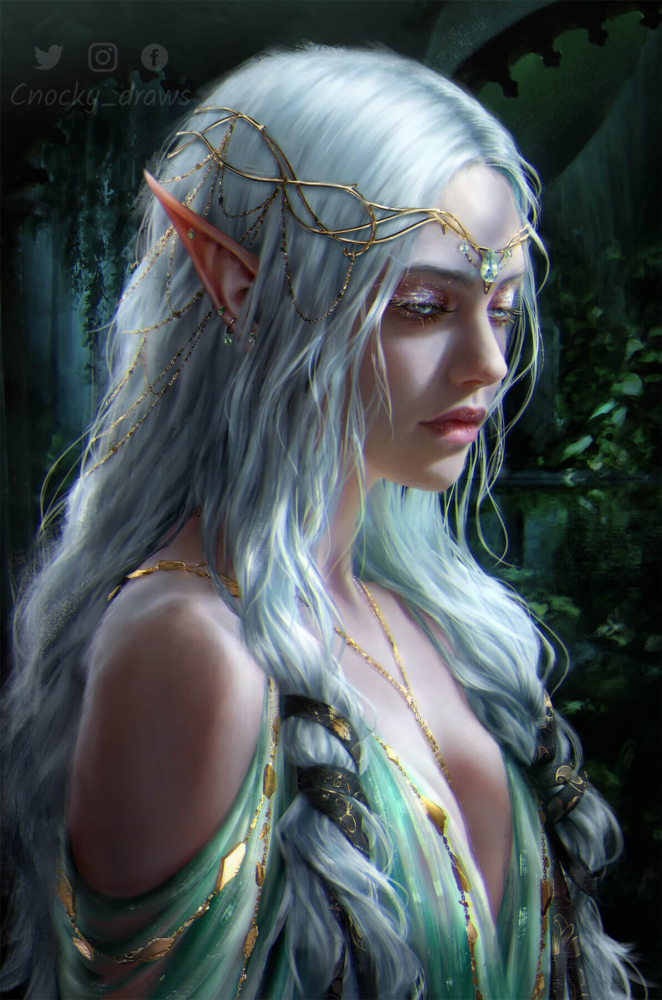
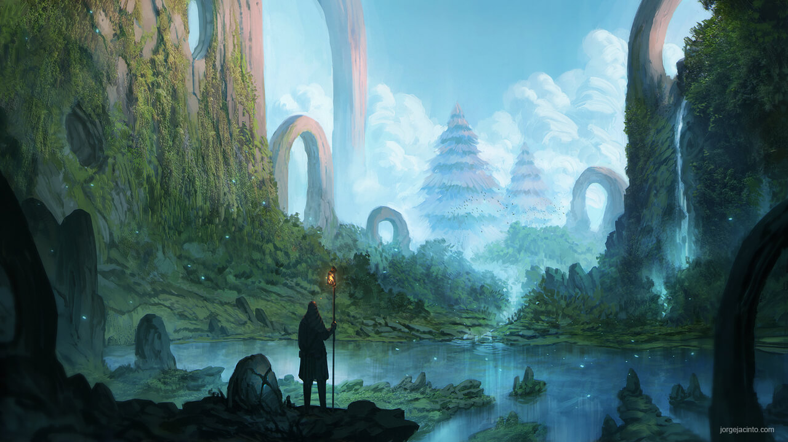
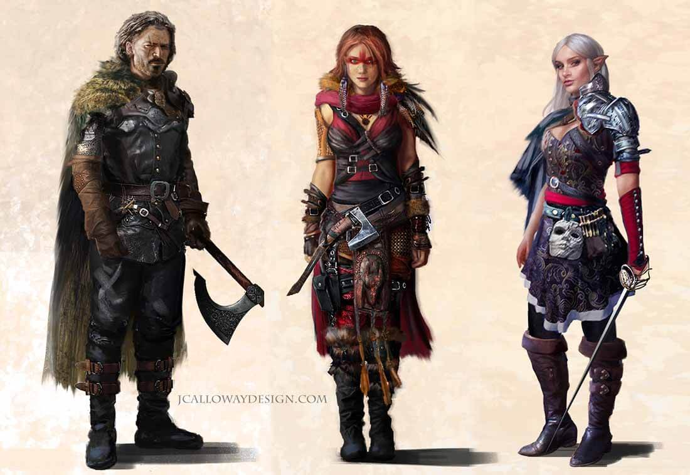
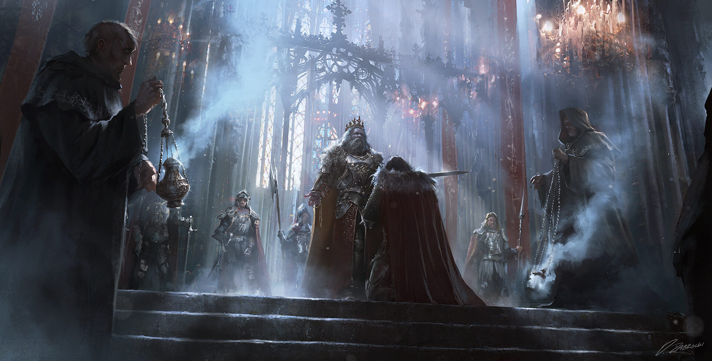
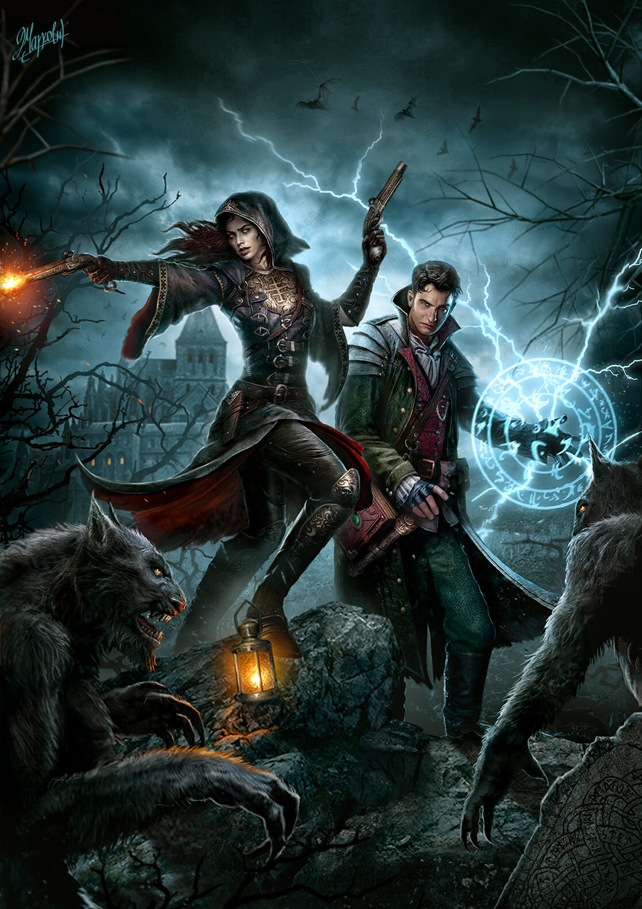
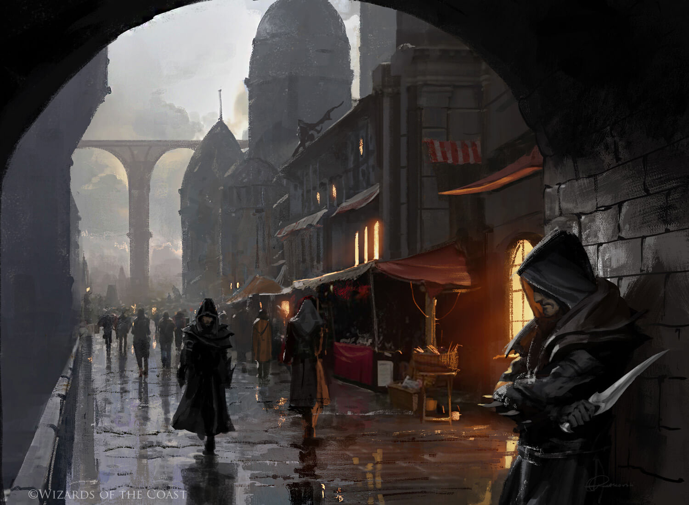
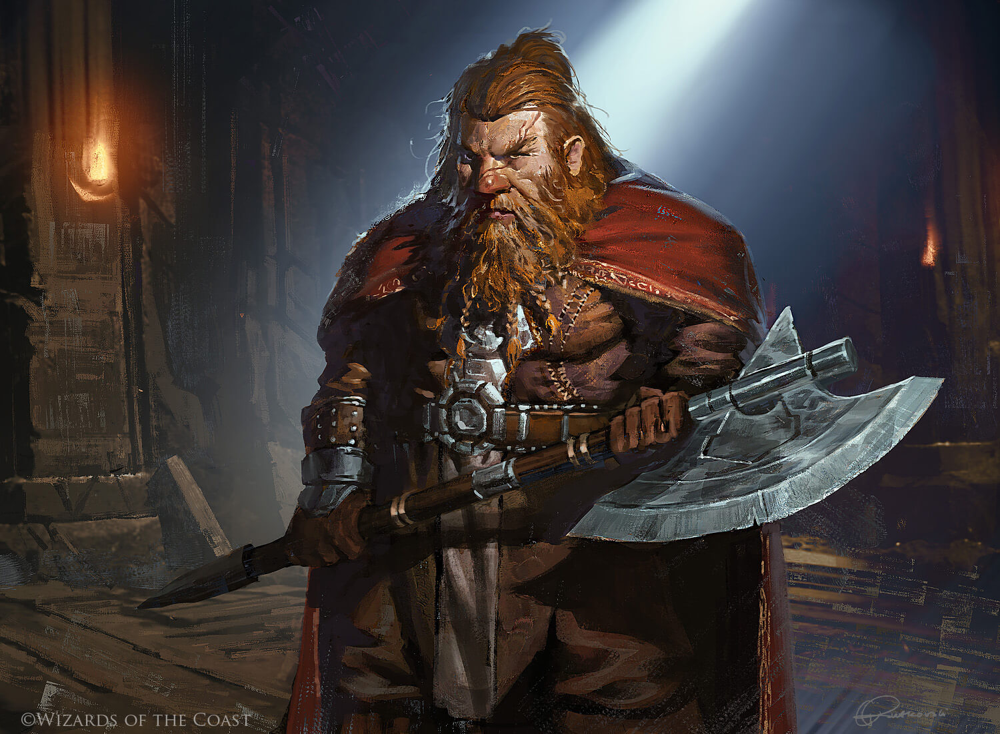
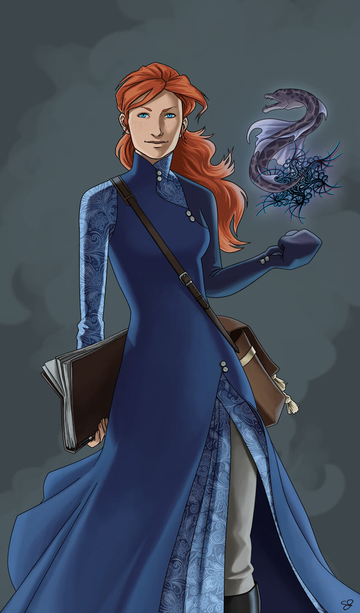
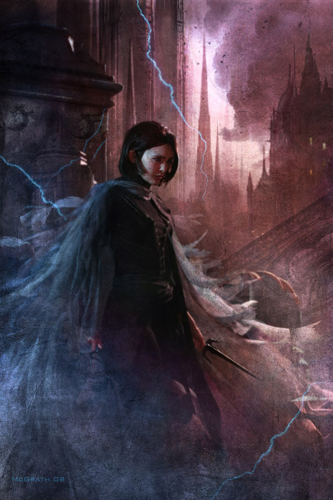

Fanart Gallery









“I have claimed that Escape is one of the main functions of
fairy-stories, and since I do not disapprove of them, it is plain that I do not accept the tone
of scorn or pity with which 'Escape' is now so often used. Why should a man be scorned if,
finding himself in prison, he tries to get out and go home? Or if he cannot do so, he thinks and
talks about other topics than jailers and prison-walls?”
-
J.R.R. Tolkien